Measurement models, state transition models and recursive Bayesian state estimation
From Bayes’ rule to hidden Markov models: measurement updates, Markov chains, and the forward algorithm.
NoteAbout this edition
English text and comments were edited for publication. Outputs are archived notebook results, not newly executed results. Lab scaffolds and reference illustrations were supplied by the course. Source and reproducibility notes.
TipSummary
This lab builds up the probabilistic machinery of state estimation step by step. Bayes’ rule is applied to two textbook examples, then to a measurement model (a noisy door sensor). A state transition model is introduced with a coin-tossing Markov chain and a weather Markov chain, where belief propagation becomes a matrix–vector product. Combining the two yields the hidden Markov model: the belief over the door state after repeated observations, the evaluation and decoding problems for the weather/mood HMM, and a generic forward algorithm. An appendix contains short PCA experiments done during the same session.
1. Bayes’ Rule
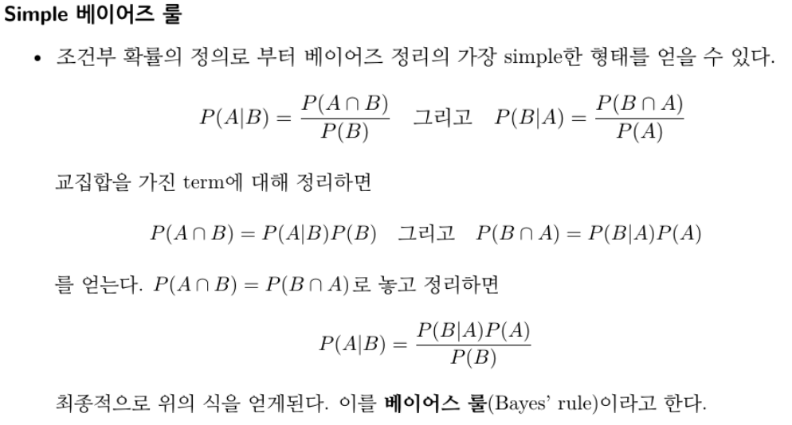
Coursework figure 1: 1. Bayes’ Rule
1.1 Example 1: The man in grey trousers
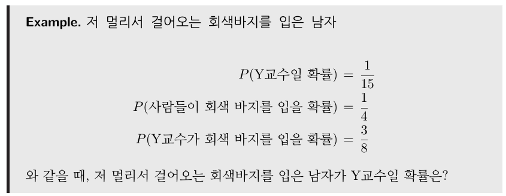
Coursework figure 2: 1.1 Example 1: The man in grey trousers
\(Y\) : the event that the person is Professor Y
\(G\) : the event that the person wears grey trousers
Assume the following probabilities are known:
\(p(Y)=1/15\)
\(p(G)=1/4\)
\(p(G|Y)=3/8\)
################## Fill Your Code! ##################p_Y =1/15p_G =1/4p_GY =3/8#####################################################
What is the following probability?
\(p(Y|G)=?\)
################## Fill Your Code! ##################p_YG = (p_GY*p_Y)/p_G#####################################################print(p_YG)
0.1
1.2 Example 2: Black and white buttons
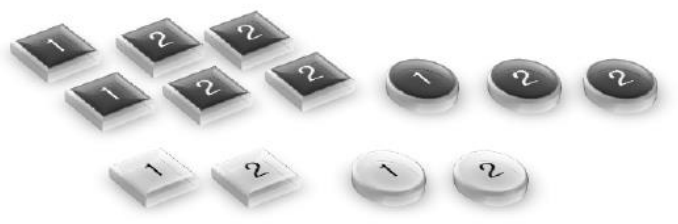
Coursework figure 3: 1.2 Example 2: Black and white buttons
\(B\) : the event that a black button is drawn
\(W\) : the event that a white button is drawn
\(Bt1\) : the event that box 1 is chosen
\(Bt2\) : the event that box 2 is chosen
Assume the following probabilities are known:
\(p(Bt1)=5/13\)
\(p(Bt2)=8/13\)
\(p(B|Bt1)=3/5\)
\(p(B|Bt2)=6/8\)
################## Fill Your Code! ################### p(Bt1) and p(Bt2)p_Bt1 =5/13p_Bt2 =8/13# p(B|Bt1) and p(B|Bt2)p_B_Bt1 =3/5p_B_Bt2 =6/8#####################################################
What is the following probability?
\(p(Bt1|B)=?\)
################## Fill Your Code! ##################p_Bt1_B = (p_B_Bt1*p_Bt1)/(p_B_Bt1*p_Bt1 + p_B_Bt2*p_Bt2)#####################################################print(p_Bt1_B)
0.33333333333333337
2. Measurement Model
2.1 Example 1: What is the probability that the door is open? (one observation)
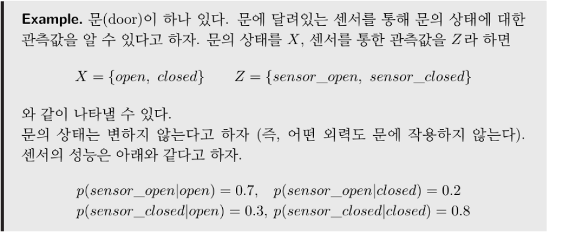
Coursework figure 4: 2.1 Example 1: What is the probability that the door is open? (one observation)
State set \(X = \{open, closed\}=\{O, C\}\)
Observation set \(Z = \{sensor\_open, sensor\_closed\}=\{SO, SC\}\)
Measurement model \(P_{zx}\)
\(p(z_{i}=SO | x_{i}=O) = 0.7\)
\(p(z_{i}=SC | x_{i}=O) = 0.3\)
\(p(z_{i}=SO | x_{i}=C) = 0.2\)
\(p(z_{i}=SC | x_{i}=C) = 0.8\)
################## Fill Your Code! ################### Measurement Modelp_SO_O =0.7p_SC_O =0.3p_SO_C =0.2p_SC_C =0.8#####################################################
We do not know whether the door is open or closed, so the prior over the state is set to be uniform.
# Initial State Probabilityp_O =0.5p_C =0.5
When the sensor reports \(sensor\_open\), how does the probability of the door state change?
p(O|SO) = ?
p(C|SO) = ?
Let us compute it with Bayes’ rule:
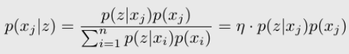
Coursework figure 5: 2.1 Example 1: What is the probability that the door is open? (one observation)
First, ignoring the normalizer \(\eta\), compute \(p(SO|O)p(O)\) and \(p(SO|C)p(C)\).
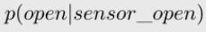
Coursework figure 6: 2.1 Example 1: What is the probability that the door is open? (one observation)
################## Fill Your Code! ################### without etap_O_SO = p_SO_O*p_O#####################################################
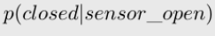
Coursework figure 7: 2.1 Example 1: What is the probability that the door is open? (one observation)
################## Fill Your Code! ################### without etap_C_SO = p_SO_C*p_C#####################################################
Next, compute the normalizer \(\eta\) and apply it to obtain p(O|SO) and p(C|SO).
The belief is the probability distribution over the state:
\(bel(x_t) = p(x_t)\), with \(bel \in \mathbb{R}^{|X|}\)
import numpy as np################## Fill Your Code! ################### Belief Initialization (Uniform)bel =1/4*np.ones((4,1))#####################################################print(bel)
[[0.25]
[0.25]
[0.25]
[0.25]]
The state transition matrix \(P_{x'x}\) has as entries the probabilities \(p(x_{t+1} | x_t)\) of moving from state \(x_t\) to state \(x_{t+1}\):
\(P_{ij} = p(x_{t+1}= i| x_t=j)\)
In this example every transition probability equals 1/4.
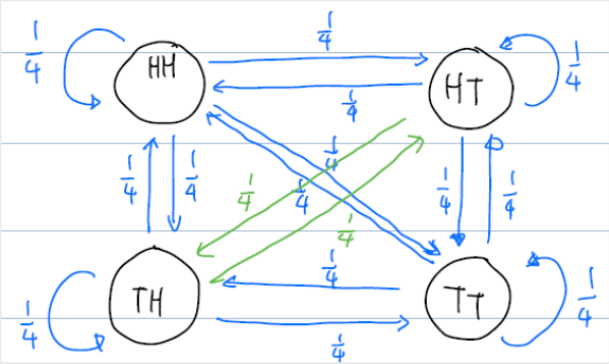
Coursework figure 10: 3.1 Example 1: Coin tossing
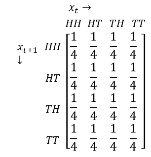
Coursework figure 11: 3.1 Example 1: Coin tossing
################## Fill Your Code! ################### Define State Transition MatrixP =1/4* np.ones((4,4))#####################################################print(P)
bel_pre = bel.copy()################## Fill Your Code! ################### Without State Transition Matrix# State Transitionbel = np.zeros_like(bel_pre)for i inrange(4):for j inrange(4): bel[i] += P[i,j]*bel_pre[j]#####################################################print(bel)
[[0.25]
[0.25]
[0.25]
[0.25]]
This computation is of course much simpler as a matrix–vector product.
################## Fill Your Code! ################### With State Transition Matrix# State Transitionbel = np.zeros_like(bel_pre)bel = P @ bel_pre#####################################################print(bel)
[[0.25]
[0.25]
[0.25]
[0.25]]
3.2 Example 2: Weather transitions
In the previous example all transition probabilities were 0.25; here they differ.
The Markov chain below has the weather as its state and the weather change probabilities as transition probabilities.
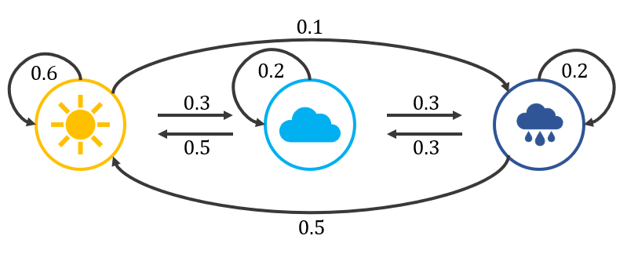
Coursework figure 12: 3.2 Example 2: Weather transitions
State set \(X = \{Sunny, Cloudy, Rainy\}=\{S,C,R\}\)
State transition probability \(P_{x'x}\)
\(p(x_{t+1}=S | x_{t}=S) = 0.6\)
\(p(x_{t+1}=C | x_{t}=S) = 0.3\)
\(p(x_{t+1}=R | x_{t}=S) = 0.1\)
\(p(x_{t+1}=S | x_{t}=C) = 0.5\)
\(p(x_{t+1}=C | x_{t}=C) = 0.2\)
\(p(x_{t+1}=R | x_{t}=C) = 0.3\)
\(p(x_{t+1}=S | x_{t}=R) = 0.5\)
\(p(x_{t+1}=C | x_{t}=R) = 0.3\)
\(p(x_{t+1}=R | x_{t}=R) = 0.2\)
(The code below was run in class with a simplified transition matrix; iterating the transition 1000 times shows the belief converging to the stationary distribution of the chain.)
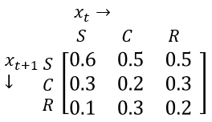
Coursework figure 13: 3.2 Example 2: Weather transitions
import numpy as np################## Fill Your Code! ################### Belief Initialization#bel = 1/3*np.ones((3,1))bel = [[0.5],[0.25],[0.25]]print(bel)print()# Define State Transition MatrixP_xx = np.zeros((3,3))P_xx[0,0] =0.5; P_xx[0,1] =0.5; P_xx[0,2] =0.5;P_xx[1,0] =0.25; P_xx[1,1] =0.25; P_xx[1,2] =0.25;P_xx[2,0] =0.25; P_xx[2,1] =0.25; P_xx[2,2] =0.25;#####################################################print(P_xx)
################## Fill Your Code! ################### With State Transition Matrix# State Transitionbel = P_xx@bel#####################################################print(bel)
[[0.5 ]
[0.25]
[0.25]]
################## Fill Your Code! ################### State Transition Iterationfor i inrange(1000): bel = P_xx@bel#####################################################print(bel.T)
[[0.5 0.25 0.25]]
4. Hidden Markov Model (without Control)
The reason for studying the measurement model and the state transition model is to understand the hidden Markov model (HMM).
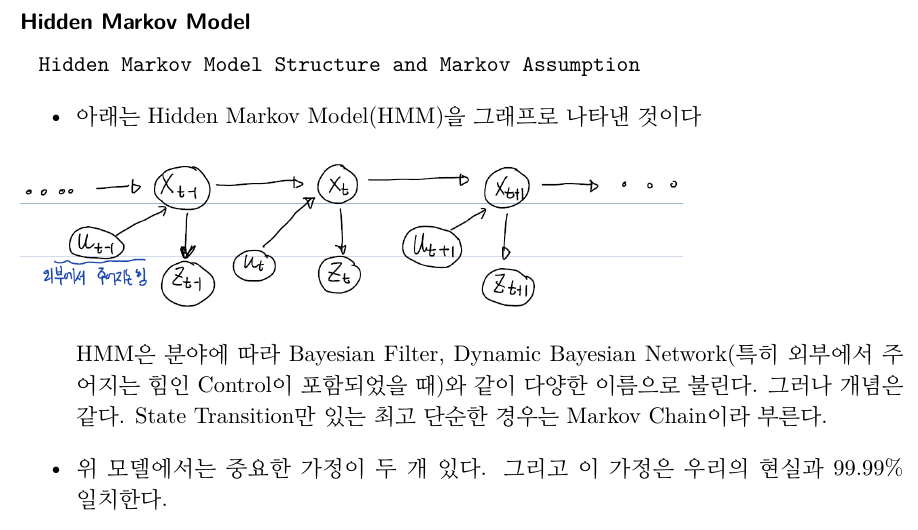
Coursework figure 14: 4. Hidden Markov Model (without Control)
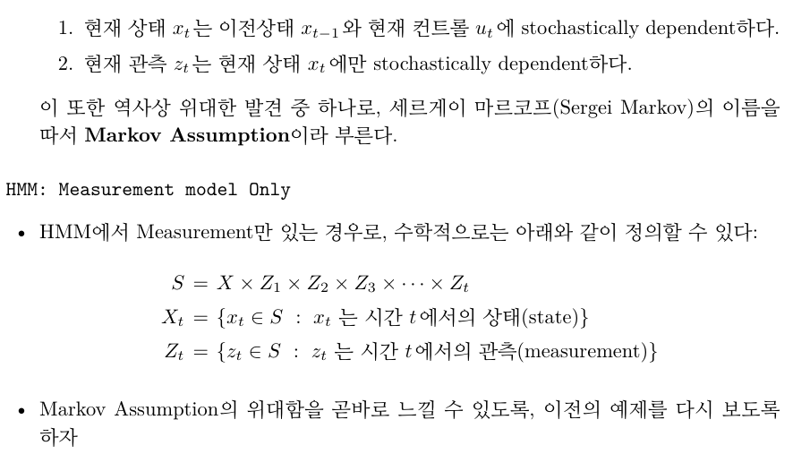
Coursework figure 15: 4. Hidden Markov Model (without Control)
4.1 Example 1: What is the probability that the door is open? (n observations)
The sensor reports \(sensor\_open\) twice in a row. How does the probability of the door state change?
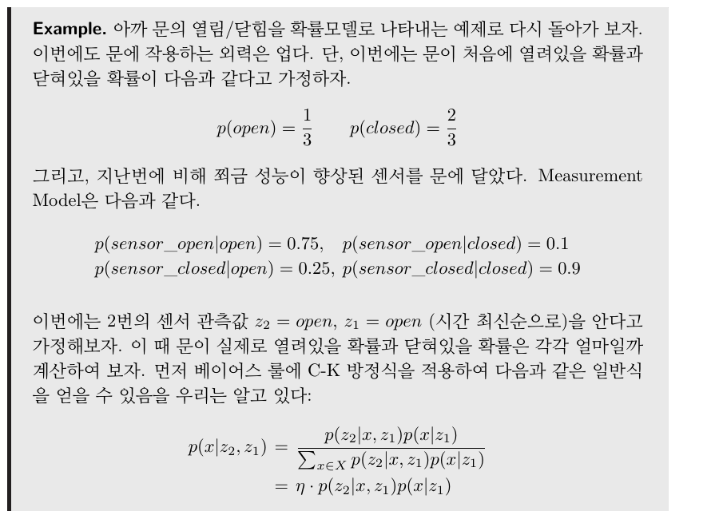
Coursework figure 16: 4.1 Example 1: What is the probability that the door is open? (n observations)
State set \(X = \{open, closed\}=\{O, C\}\)
Observation set \(Z = \{sensor\_open, sensor\_closed\}=\{SO, SC\}\)
If the observations are \(z_{1:5}=\{sensor\_open, sensor\_closed, sensor\_closed, sensor\_open, sensor\_open\}\), how does \(p(open|z_{1:n})\) evolve over time?
We solve this using both the measurement model and the state transition probability (the door does not move, so the transition matrix is the identity).
State set \(X = \{open, closed\}=\{O, C\}\)
Observation set \(Z = \{sensor\_open, sensor\_closed\}=\{SO, SC\}\)
Measurement model \(P_{zx}\)
\(p(z_{t}=SO | x_{t}=O) = 0.75\)
\(p(z_{t}=SC | x_{t}=O) = 0.25\)
\(p(z_{t}=SO | x_{t}=C) = 0.1\)
\(p(z_{t}=SC | x_{t}=C) = 0.9\)
State transition probability \(P_{x'x}\)
\(p(x_{t+1}=O | x_{t}=O) = 1\)
\(p(x_{t+1}=C | x_{t}=O) = 0\)
\(p(x_{t+1}=O | x_{t}=C) = 0\)
\(p(x_{t+1}=C | x_{t}=C) = 1\)
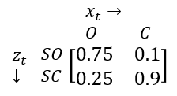
Coursework figure 20: 4.1.2 Five observations
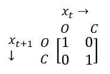
Coursework figure 21: 4.1.2 Five observations
Coursework figure 22: 4.1.2 Five observations
################## Fill Your Code! ################### Define Measurement Model MatrixP_zx = np.array([ [0.75, 0.1], [0.25, 0.9]])# Define State Transition MatrixP_xx = np.array([ [1, 0], [0, 1]])# Initial State Probability(Belief)bel = np.ones((2,1))bel = bel/np.sum(bel)# Observation Sequenceobs = [0, 1, 1, 0, 0]#obs = [0,0] #0 is open# State Transition with Observationfor i inrange(len(obs)): bel = P_xx@bel bel = P_zx[obs[i],:].reshape((2,1)) *bel bel = bel/np.sum(bel) # normalizationprint(bel[0]) # P(open | z_1:t): row 1 is p(O|SO), row 2 is p(O|SO,SO), ...#####################################################
Given \(z_{1:n}, P_{x'x}, P_{zx}\), find the state sequence \(x_{1:n}\) that produced \(z_{1:n}\).
Here we take the greedy approach of choosing the most probable state of \(bel(x)\) at each step of the evaluation problem.
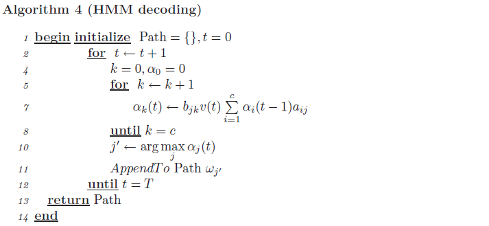
Coursework figure 28: 4.2.2 The Decoding Problem
Path : sequence of states
\(w == x\) : state
\(v == z\) : observation
\(\alpha_t == bel_t\) : belief
\(a_{ij} == P_{x'x}\) : state transition probability (index order reversed)
\(b_{jk} == P_{zx}\) : measurement model (index order reversed)
import numpy as npnp.set_printoptions(9)################## Fill Your Code! ################### Define State Transition MatrixP_xx = np.zeros((3,3))P_xx[0,0] =0.6; P_xx[1,0] =0.3; P_xx[2,0] =0.1P_xx[0,1] =0.5; P_xx[1,1] =0.2; P_xx[2,1] =0.3P_xx[0,2] =0.5; P_xx[1,2] =0.3; P_xx[2,2] =0.2# Define Measurement Model MatrixP_zx = np.zeros((2,3))P_zx[0,0] =0.9; P_zx[0,1] =0.6; P_zx[0,2] =0.2;P_zx[1,0] =0.1; P_zx[1,1] =0.4; P_zx[1,2] =0.8;# Observation Sequence# H A A H Hobs = [0, 1, 1, 0, 0]# Belief Initializationbel = np.ones((3,1))bel = bel/np.sum(bel)# State Transition with ObservationPath = []for i inrange(len(obs)): bel = P_xx@bel bel = P_zx[obs[i],:].reshape((3,1)) *bel bel = bel/np.sum(bel) j = np.argmax(bel) Path.append(j)#####################################################print(Path)
[0, 2, 2, 0, 0]
4.3 Limitations of HMMs and the Need for RNNs
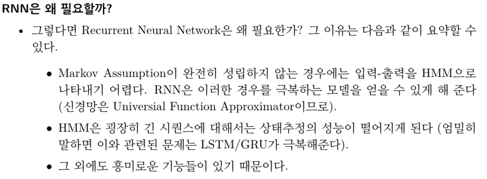
Coursework figure 29: 4.3 Limitations of HMMs and the Need for RNNs
For reference, a generic implementation of the HMM forward algorithm (\(\alpha\) recursion) on a small 3-state model:
import numpy as npdef forward_algorithm(pi, A, B, observations): T =len(observations) N =len(pi)# Step 1: Initialization alpha = np.zeros((T, N)) alpha[0, :] = pi * B[:, observations[0]]# Step 2: Recursionfor t inrange(1, T):for j inrange(N): alpha[t, j] = np.sum(alpha[t-1, :] * A[:, j]) * B[j, observations[t]]# Step 3: Termination P_O_given_lambda = np.sum(alpha[-1, :])return P_O_given_lambda, alpha# HMM parameterspi = np.array([0.4, 0.3, 0.3]) # initial state distributionA = np.array([[0.5, 0.2, 0.3], # transition matrix [0.3, 0.5, 0.2], [0.2, 0.3, 0.5]])B = np.array([[0.7, 0.1, 0.2], # emission matrix [0.1, 0.6, 0.3], [0.3, 0.2, 0.5]])# Observation sequenceobservations = [0, 1, 2, 0, 1]# Likelihood via the forward algorithmprobability, alpha_matrix = forward_algorithm(pi, A, B, observations)# Print resultsprint(f"Probability of the observation sequence: {probability}")print("Alpha matrix from the forward algorithm:")print(alpha_matrix)
Probability of the observation sequence: 0.0030967322999999997
Alpha matrix from the forward algorithm:
[[0.28 0.03 0.09 ]
[0.0167 0.0588 0.027 ]
[0.006278 0.012252 0.015135 ]
[0.00688912 0.00119221 0.00357039]
[0.00045163 0.00182703 0.00081807]]
Appendix · PCA Experiments
Short principal component analysis (PCA) experiments done in the same session: projecting 3-D and 5-D random data onto 2 and 3 principal components with scikit-learn, visualizing a synthetic binary classification problem in PCA space, and finally computing PCA by hand from the covariance matrix and its eigen-decomposition.